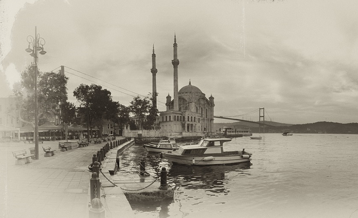
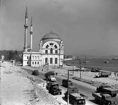
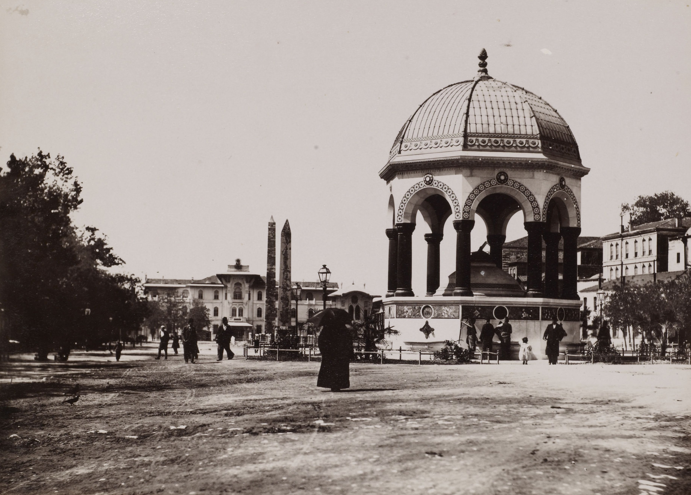

İstanbul'un Tarihi
İstanbul'un Kuruluşu
İstanbul tarihi binlerce yıl öncesine dayanır, ama bilinen ilk yerleşim MÖ. 7. yy’da gerçekleşmiştir. O
dönemde Antik Yunan yarımadasındaki şehir devletleri arasında Megara isminde bir şehir devleti vardır. Bu
şehir devletleri ekonomik ve kültürel olarak o dönemin en ileri devletleridir. Ekonomik gelişimlerindeki
en
önemli nedenlerden biri, kolonileşme çabalarıdır. Megara şehir devletinin kralı olan Byzas, yeni bir
koloni
bulmak için Delphi’de bulunan Apollon (Yunan mitolojisindeki bilgelik tanrısı) tapınağına gidip kahine,
kolonileşmek için en uygun yerin neresi olduğunu danışır. Kahin kendisine, körler ülkesinin karşısında yer
alan topraklara gitmesi gerektiğini söyler.
Byzas bu ülkeyi bulmak için yola çıkar. Bugünkü tarihi yarımadaya (Sultanahmet bölgesi) geldiğinde,
Anadolu
yakasında bugünkü Kadıköy’ün olduğu bölgede bir yerleşim yeri (Chalcedon) olduğunu görür. Bu kadar güzel
bir
bölge varken insanların karşı kıyıda yerleşim yeri kurmalarından şaşkınlık duyar. Karşıda yaşayan
insanların
kör olduğunu düşünür. Kahinin söyledikleri aklına gelir ve bulunduğu bölgeye koloni kurar. Bu koloni
kralın
adını alır ve Byzantion / Byzantium olur.
İstanbul, yerleşim tarihi 300 bin, kentsel tarihi
yaklaşık
3 bin, başkentlik tarihi 1600 yıla kadar uzanan Avrupa ile Asya kıtalarının kesiştiği noktada bulunan bir
dünya kentidir.
Şehir çağlar boyunca farklı uygarlık ve kültürlere ev sahipliği yapmış, yüzyıllar boyu çeşitli din, dil ve
ırktan insanların bir arada yaşadığı kozmopolit ve metropolit yapısını korumuş ve tarihsel süreçte eşsiz
bir mozaik halini almıştır.
Uzun zaman dilimleri boyunca her alanda merkez olmayı ve iktidarda kalmayı başaran dünyadaki ender
yerleşim yerlerinden biri olan İstanbul geçmişten günümüze bir dünya başkentidir.
Byzantion dönemi (MÖ 667-MS 332)
İstanbul, bu dönemde adı Byzantion olan antik bir Yunan şehir devleti olarak kurulacak, kısa zamanda gelişip güçlenecek ve dönemin merkezi gücü Roma İmparatorluğu tarafından ele geçirilecektir. Romalılar tarafından Byzantion, latinleştirilecek ve Byzantium olarak Roma İmparatorluğu'nun önemli şehirlerinden biri haline gelecek, adı değiştirilecek önce Byzantium sonra Augusta Antonina diye anılacaktır.Bizans İmparatorluğu dönemi (330-1453)
İstanbul'un bu dönemde adı Konstantinopolis olarak değişmiş, önce Roma İmparatorluğu'nun sonra Bizans İmparatorluğu'nun başkentliğini yapmıştır. Bizans başkenti Konstantinopolis yaklaşık 1000 yıl boyunca Orta Doğu'ya hakim bir şehir konumuna yükselmiştir.Osmanlı İmparatorluğu dönemi (1453-1922)
İstanbul bu dönemde büyük bir cihan imparatorluğunun başkenti olacak, üç kıtada yayılan toprakları 400 yıldan uzun süre hakimiyetinde bulunduracaktır. Kentin 29 Mayıs 1453'te II. Mehmed tarafından fethedilmesinden sonra Osmanlı dönemi başlar.Süper Ligde Yer Alan İstanbul Takımları